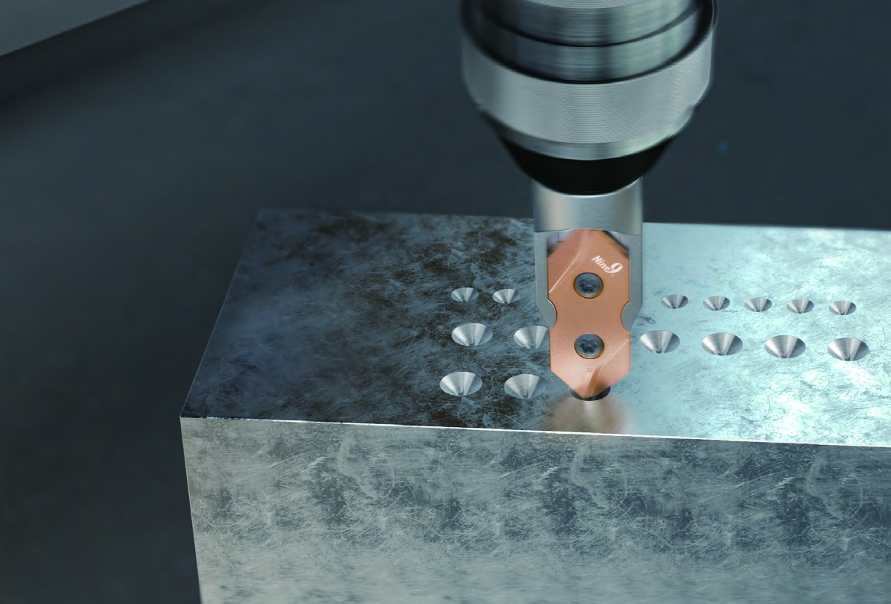

CUTTING ASSISTANT
Spotting depth &
chamfer compensation.
Explore spotting depth and chamfer compensation before setting your full cutting conditions.
Spotting depth t
—mm
Z target
—mm
NINE9 · APPLICATION SUPPORT
Find the right tool, set cutting conditions, and prepare a starting NC program.

CUTTING ASSISTANT
Explore spotting depth and chamfer compensation before setting your full cutting conditions.
—mm
—mm
NC PROGRAMMING
Go straight to a generator for your machining method.
Your tool. Your parameters.
A program you can review.